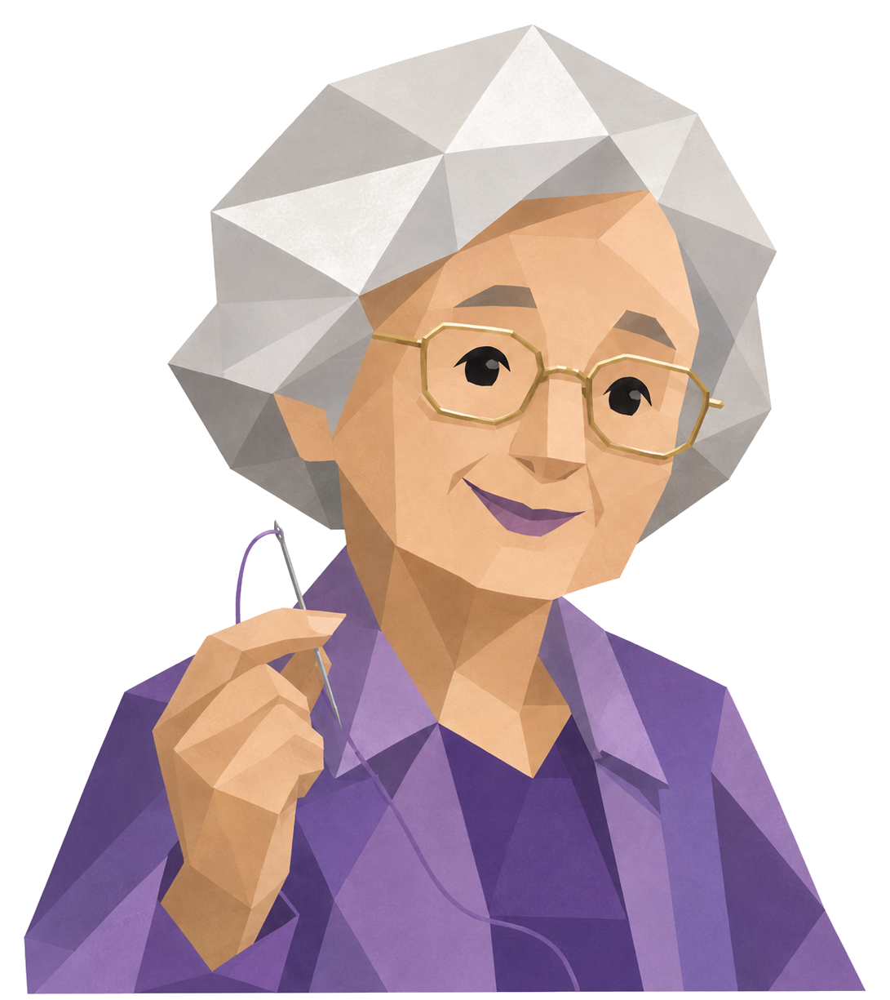
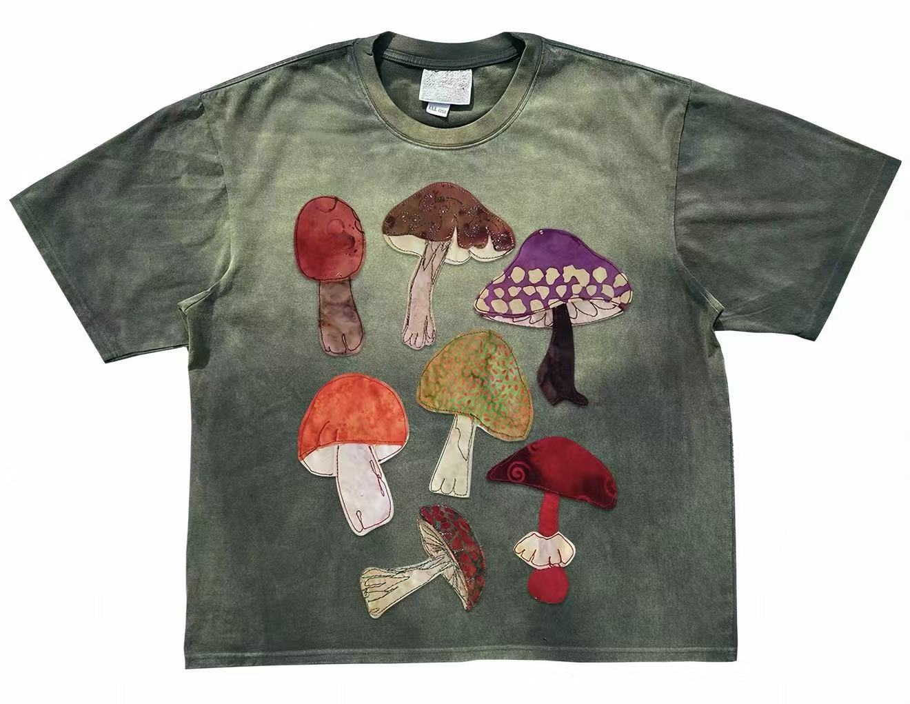
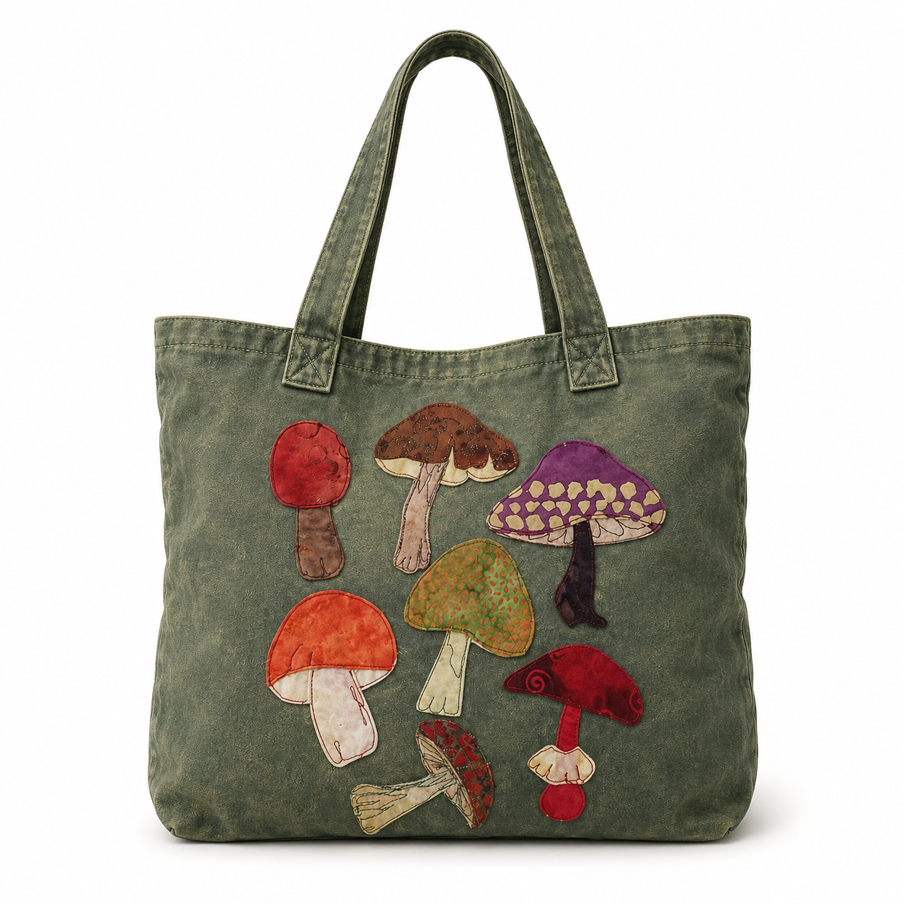
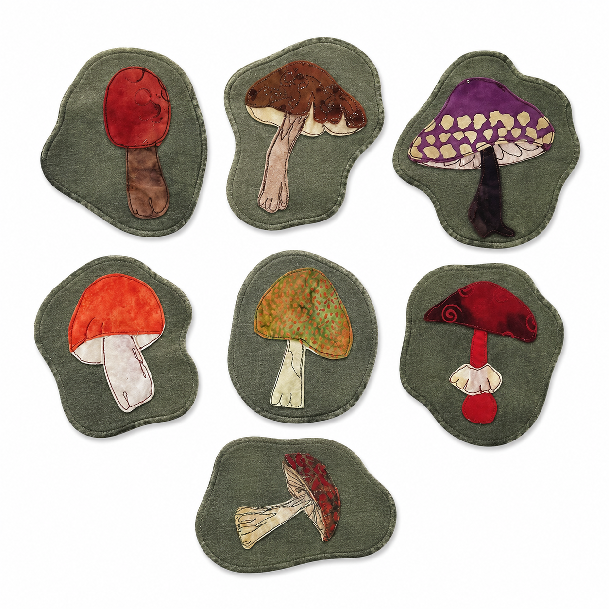

秀荣
AI裁缝奶奶，手把手教你如何旧物改造
拍下旧衣服。
奶奶先帮你看。
+

来啦？
把旧衣服拍给奶奶看。

对准衣服，让奶奶看清布料和图案。
奶奶正在看布料和图案
奶奶，我想改造这件旧衣服。
来，我先看看它能不能拆、能不能缝。

手提包
约 2 小时 · 内衬 / 包带 / 磁扣

蘑菇杯垫
约 45 分钟 · 铺棉 / 包边 / 针线
这个蘑菇像是缝上去的布贴，可以拆下来继续用。
家里缺不缺杯垫呀？小蘑菇做杯垫很可爱；大块衣料可以做一个手提包。
你要是想做包，我就一步一步陪你。
1. 拆下蘑菇布贴
沿线慢慢挑开，别剪破图案。
2. 剪出包身
保留最大完整布面，左右留缝份。
3. 配内衬
内衬比外布小一点，包口更平整。
4. 固定包带
包带位置先用珠针定位。
5. 缝合包身
转角处慢一点，针脚会更顺。
6. 做杯垫
剩下的小蘑菇加铺棉和包边。
7. 最后检查
线头剪干净，拍给奶奶看看。
第一步奶奶看过了，先拆蘑菇布贴。沿原来的针脚慢慢挑，别急着剪。
不会的地方我按住说话问你。
第 7 步完成啦？给奶奶拍一张，我帮你看看线和包口。
做完的作品也可以放进收藏夹，下次继续改旧物就有记录了。
奶奶，我做好啦。
我看见啦，包口很平，蘑菇也缝得稳。帮你记住啦，已经放进右上角收藏夹。
做得真好，越来越好了。
按住说话
上半看图，
下半问奶奶。